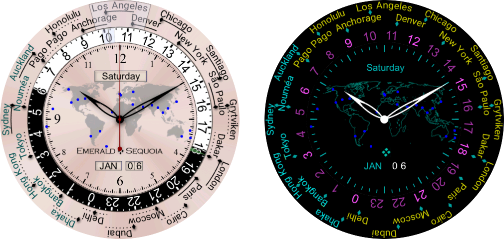

| Buy this face |
|
| Buy all 21 faces |
|
| Buy this face |
|
| Buy all 21 faces |
|
Terra and Gaia are world-time faces. Both are included in Emerald Chronometer, or you can buy each of them separately.
On Terra, there are 24 cities arrayed around the outer edge of the front of the face; you may customize the selection of cities from Emerald Chronometer's 80,000-city database (see below). Each city has an associated "dot hand" which indicates that city's time against the 24-hour ring (in black and white, just inside of the city ring). If the city's time zone uses Daylight Saving Time (DST, also called Summer Time in some locales), then the dot hand will move along its "channel" twice a year when DST transitions for that city; each dot moves independently of the others according to the rules for its city's time zone. If the city's time zone does not use DST, there will not be a channel for the dot, but instead a dashed line under the city to associate the city with the dot.
The city fully underneath the clear overlay indicator at the top of the face is used to determine the time shown by the large "main" 12-hour hands in the center of the face, along with the date and day of the week shown in the windows. Below the selected city, over the 24-hour dial, is a smaller clear indicator with a hairline center; this will be aligned with the top city's dot, and thus will indicate the 24-hour time of the selected city on the 24-hour dial. If you tap on a city name, the city ring will rotate around to that position, and the main time hands will display the time for that city. (To avoid confusion, the time reverts to the time of the watch device after 10 seconds with no taps).
For example, in the picture below,
New York is the selected city (and thus New York's time will be displayed in the central dial). New York has a solid channel for its dot, so its time zone uses Daylight Saving Time, and DST is in effect (the dot is at the right end of its channel). We can see from Santiago's dot that the times in Santiago and New York are the same at the current time, but that Santiago is not on DST at the current time (its dot is at the left of its channel).
 The time in New York (and Santiago) is about 22:15, or 10:15pm, since the dots for those cities are aligned with that time on the 24-hour dial (we also know it's evening because the time is in the dark "night" zone from 6pm to 6am).
The time in New York (and Santiago) is about 22:15, or 10:15pm, since the dots for those cities are aligned with that time on the 24-hour dial (we also know it's evening because the time is in the dark "night" zone from 6pm to 6am).
In the picture at right, it may be seen that Dakar does not use DST, because it has a dashed line in place of the dot-motion channel. In this picture we can also see the green UTC hour hand in the black portion of the 24-hour dial (Dakar's timezone is at UTC+0 year-round).
The city labels are "laser etched" into the ring so that the background shows through, and underneath the
ring are colored background parts that move to change the apparent color of the city labels. If the city label is black, it means that the city is on the same day as the central "main" time, and thus the city's day may be read from the central windows. If the city label is green,
it means the city is on the next day (relative to the central windows), and if the city label is red, it means the city is on the previous day. These two pictures show the same time (11:30pm in London, 12:30am the next day in Paris) with the outer ring in two different positions; when London is selected by the clear overlay, Paris is on the next day and is green, but when Paris is selected, London is on the previous day and is red.
it means the city is on the previous day. These two pictures show the same time (11:30pm in London, 12:30am the next day in Paris) with the outer ring in two different positions; when London is selected by the clear overlay, Paris is on the next day and is green, but when Paris is selected, London is on the previous day and is red.
There are 24 blue dots on the central world map, and they indicate the locations of the 24 cities arrayed around the city ring:

Because the cities are at different latitudes (and offsets from the nominal longitudinal time zone meridian), it is not possible to display the actual times of sunrise and sunset (and thus the daytime and nighttime hours) for all 24 cities, and so the day/night ring on this face is fixed with 12 hours of day (white) and 12 hours of night (black). Contrast this with Mauna Kea, and with Gaia, where the actual times of day and night, based on the sunrise and sunset times at a single location, are shown.
Nearly all cities will have their dot either to the left or the right of the city label center, rather than directly underneath the center. This is done to minimize the distance the dot must be from the label when DST is in effect; for example, when New York is on standard time (EST, UTC-5), the dot is slightly to the left of the label center, but when it is on daylight time (EDT, UTC-4), the dot is slightly to the right of the label center. The same placement rule is followed for cities that do not have DST, so that the cities can be evenly spaced around the ring; this has the additional advantage that such cities can usually appear in two different positions on the ring, thus giving more flexibility to the choice of cities (see below).
In ambient mode, the same information is displayed, with different colors to save energy.
This face allows you to customize the cities that are shown on the outer ring.
To customize a city shown on the outer ring:
NOTE: To avoid confusion, one of the cities on the ring must display the time in the timezone your watch device has been set to. Usually this is not an issue, but in certain rare circumstances your choice may be overridden if that choice would mean there is not a slot that can display the device time. This can happen when you add the city or if you later travel into a different timezone that would need to use that slot.